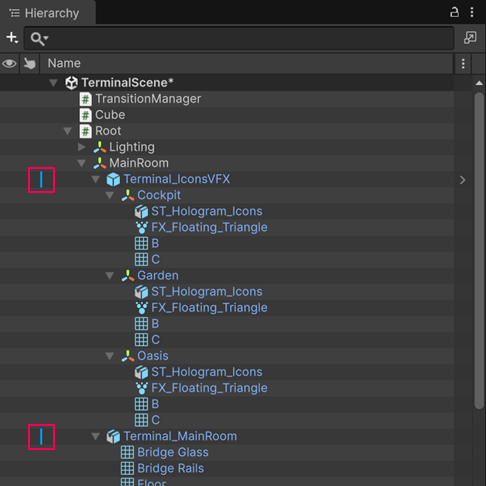
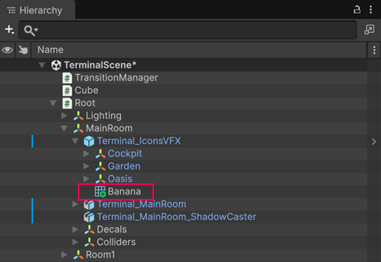

Explore the settings and functions in the Hierarchy window to view and organize items in your scene.
For more information about managing GameObjects in the Hierarchy window, refer to Manage GameObjects in the Hierarchy window.
To review Editor preferences that can affect the Hierarchy window, refer to the General tab of the Preferences window.
The Hierarchy window uses a variety of icons to indicate the type, attached components, visibility, and pickability of items in your scene.
By default, the Unity Editor displays an icon next to the name of each GameObject in the Hierarchy window based on the components attached to that GameObject. You can quickly review which components are in your scene by glancing at the icons next to each GameObject.
You can control which types of icons display in the Hierarchy window with the GameObject Icons setting in the General tab of the Preferences window. For example, you can display:
Which icon the Editor displays next to the GameObject name in the Hierarchy window follows this order of priority:
You can identify the following types of items using these icons in the Hierarchy window.
This list isn’t exhaustive. In many contexts, the Hierarchy window displays the icon of the first component listed after the Transform or Rect Transform component that is attached to the GameObject in the Inspector window.
| Item | Icon | Description |
|---|---|---|
| GameObject | The foundational building blocks of all items in a scene. GameObjects are containers for components, which provide functionality. In the Hierarchy window, the default GameObject icon only displays if you have set the GameObject Icons setting in the General tab of the Preferences window to Do not change GameObject icons. Otherwise, what icon displays is determined by the components attached to the GameObject, whether you have selected a custom icon for the GameObject, or whether the GameObject is a prefab. For more information, refer to Introduction to GameObjects. | |
| Prefab | Prefabs are assets that act as a template for specific items in your scene. When you edit a prefab asset, updates are applied to all instances of that asset that appear in your scene. For more information, refer to Introduction to prefabs. | |
| Prefab variant | A prefab variant inherits properties from a base prefab asset but overrides some of those properties with different values. Essentially, it’s a new prefab that’s based on an original. Editing the base prefab also updates the variant, except for properties that are already changed in the variant. For more information, refer to Create variations of prefabs. | |
| Prefab model | Prefab models are prefabs that are imported from other 3D modeling software. Prefab models can contain skeletons, materials, meshes, animations, and more. |
The scene visibility status controls whether the GameObject is hidden or displayed in the Scene view. You can toggle visibility on and off in the Visibility column of the Hierarchy window. For more information, refer to Scene visibility.
The following visibility states are available.
| State | Icon | Description |
|---|---|---|
| Visible | The GameObject and all its child GameObjects are visible in the scene. This is the default status for a new GameObject. This status icon is visible only when you hover over the GameObject. | |
| Hidden | The GameObject and all its child GameObjects are hidden in the scene. | |
| Visible parent | The GameObject is visible in the scene, but one or more of its child GameObjects are hidden. | |
| Hidden parent | The GameObject is hidden in the scene, but one or more of its child GameObjects are visible. |
The scene pickability status controls whether you can select the GameObject in the Scene view. You can toggle pickability on and off in the Picking column of the Hierarchy window. For more information, refer to Control which GameObjects are selectable in the Scene view.
The following pickability states are available.
| State | Icon | Description |
|---|---|---|
| Pickable | You can select the GameObject, and any of its child GameObjects, in the Scene view. This is the default status for a new GameObject. This status icon is visible only when you hover over the GameObject. | |
| Not pickable | You can’t select the GameObject, or any of its child GameObjects, in the Scene view. | |
| Pickable parent | You can select the GameObject in the Scene view, but you can’t select one or more of its child GameObjects. | |
| Not pickable parent | You can’t select the GameObject in the Scene view, but you can select one or more of its child GameObjects. |
When you edit a prefab instance in a scene, Unity displays an indicator next to the parent GameObject in the Hierarchy window. This indicator highlights any prefab that has non-default override values in any of its child GameObjects. The override indicator appears as a blue line on the left side of the margin and is identical to the instance override in the Inspector window.
To open the Overrides dropdown directly from the Hierarchy window, select the override indicator. For more information, refer to Override prefab instances.

GameObjects you add to the prefab instance have a plus badge on their icons.

For more information about editing prefabs from the Hierarchy window, refer to Edit prefab assets.